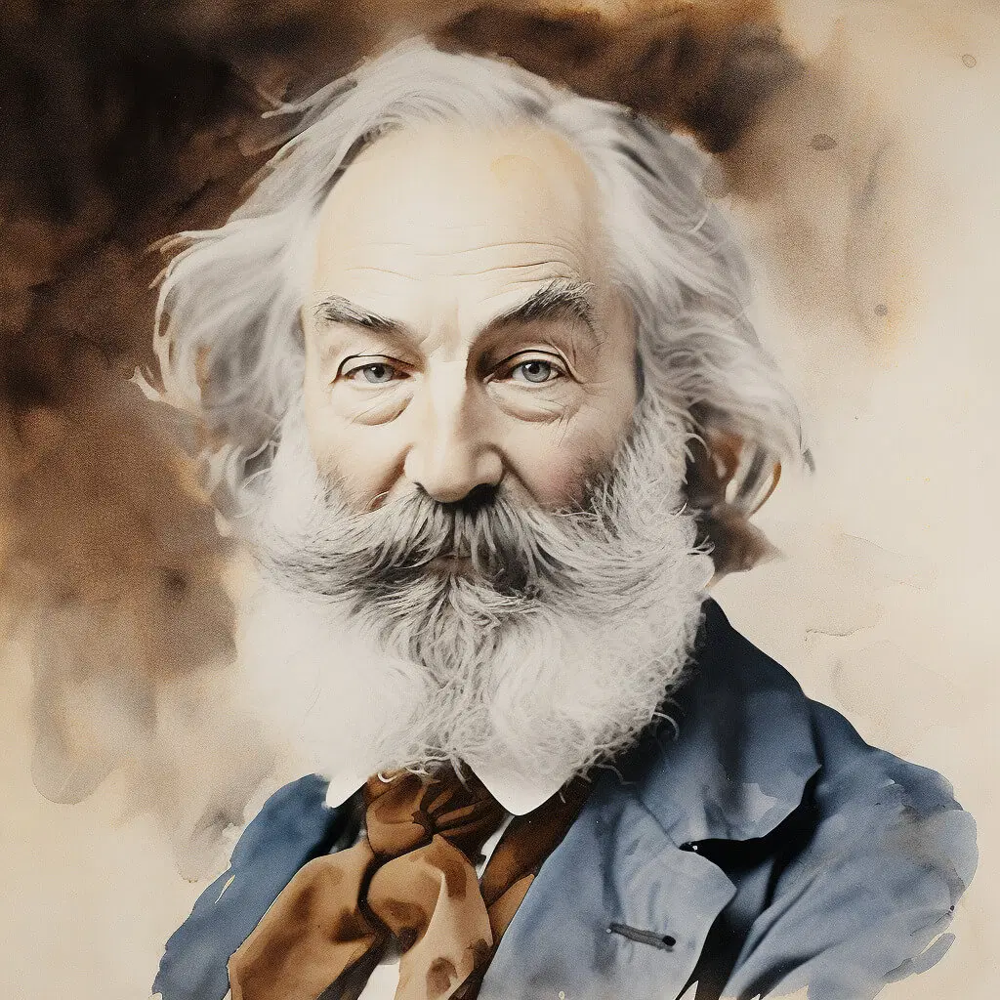

Robert Frost was a prominent American poet, born in San Francisco in 1874. Frost is highly esteemed for his realistic depictions of rural life and his portrayal of complex social and philosophical themes in his work. Here are some of his popular works:
- Mending Wall
- The Road Not Taken
- Stopping by Woods on a Snowy Evening
